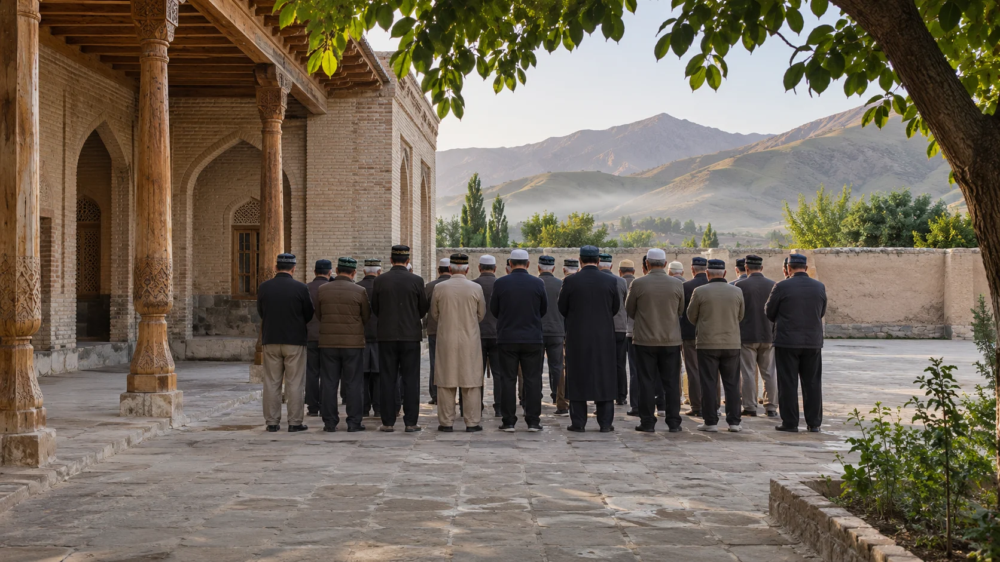
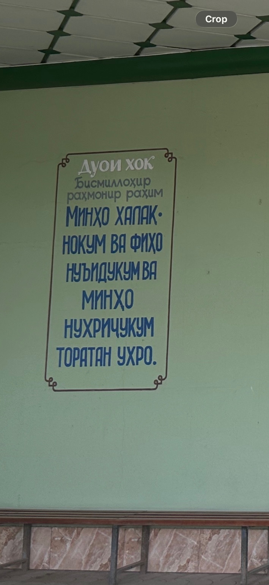
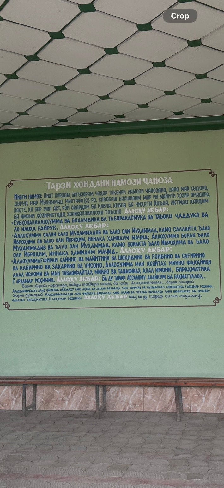
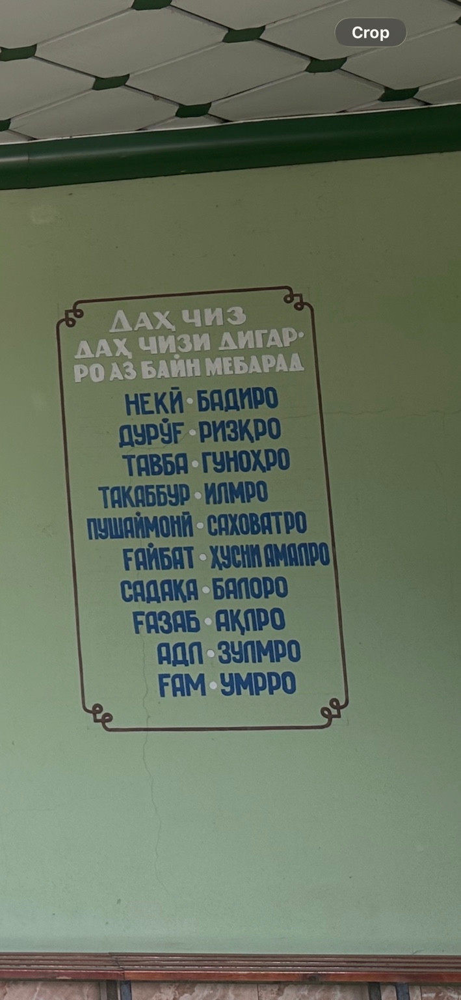

МАВЗӮИ АЛОҲИДА · БА ЗАБОНИ ТОҶИКӢ
Дуои хок, намози ҷаноза ва даҳ панд
Матни се лавҳа дар як ҷо. Аксҳо, хониши лавҳаҳо ва манбаъҳои арабӣ аз ҳам ҷудо оварда шудаанд.
Акси муқова тасвири сохтаи зеҳни сунъӣ аст; аксҳои лавҳаҳо аслӣ мебошанд.01 · ЛАВҲАИ ЧАП
Дуои хок
Акси лавҳаро кушодан

Бисмиллоҳир раҳмонир раҳим
بِسْمِ ٱللَّهِ ٱلرَّحْمَٰنِ ٱلرَّحِيمِ
Хониши лавҳа: «Минҳо халақ. нокум ва фиҳо нуъидукум ва минҳо нухриҷукум торатан ухро».
مِنْهَا خَلَقْنَٰكُمْ وَفِيهَا نُعِيدُكُمْ وَمِنْهَا نُخْرِجُكُمْ تَارَةً أُخْرَىٰ
Аз хок шуморо офаридем, ба он бозмегардонем ва бори дигар аз он берун меорем.
Маъно ба тоҷикӣ · Сураи Тоҳо, ояти 55. Дар лавҳа «ХАЛАҚ · НОКУМ» дар ду сатр навишта шудааст; дар ин ҷо арабии оят аз матни санҷидашудаи Tanzil Project ↗ оварда шудааст.
Оят ва тарҷумаҳоро кушодан ↗02 · ЛАВҲАИ МИЁНА
Тарзи хондани намози ҷаноза
Акси лавҳаро кушодан

Матни тоҷикӣ аз лавҳа хонда шудааст; имло ва аломатҳои китобат барои хондан яксон карда шудаанд. Матнҳои арабӣ барои муқоиса бо манбаъҳо оварда шудаанд.
Нияти намоз
Ният кардам бигузорам чаҳор такбири намози ҷанозаро, сано мар Худоро, дуруд мар Муҳаммад Мустафо (с)-ро, савобаш бахшидам мар ин майити ҳозир омадаро, вақте ки бар ман аст, рӯй овардам ба қибла, қибла ба ҷиҳати Каъба, иқтидо кардам ба имоми ҳозиристода, холисанлиллоҳи таъоло.
Ин баёни ният дар худи лавҳа аст, на иқтибос аз оят ё ҳадис.
Чаҳор такбир: Бухорӣ 1334 ↗.
اللَّهُ أَكْبَرُ
Такбири аввал
Аллоҳу акбар.
Субҳонакаллоҳумма ва биҳамдика ва таборакасмука ва таъоло ҷаддука ва ло илоҳа ғайрук.
سُبْحَانَكَ اللَّهُمَّ وَبِحَمْدِكَ، وَتَبَارَكَ اسْمُكَ، وَتَعَالَى جَدُّكَ، وَلَا إِلَهَ غَيْرُكَ.
Ҳамин лафз дар Абу Довуд 775 ↗ барои оғози намоз омадааст; он ривоят махсуси ҷаноза нест.
Такбири дуюм
Аллоҳу акбар.
Аллоҳумма салли ъало Муҳаммадин ва ъало оли Муҳаммад, камо саллайта ъало Иброҳима ва ъало оли Иброҳим, иннака ҳамидум маҷид.
Аллоҳумма борик ъало Муҳаммадин ва ъало оли Муҳаммад, камо боракта ъало Иброҳима ва ъало оли Иброҳим, иннака ҳамидум маҷид.
اللَّهُمَّ صَلِّ عَلَى مُحَمَّدٍ وَعَلَى آلِ مُحَمَّدٍ، كَمَا صَلَّيْتَ عَلَى إِبْرَاهِيمَ وَعَلَى آلِ إِبْرَاهِيمَ، إِنَّكَ حَمِيدٌ مَجِيدٌ.
اللَّهُمَّ بَارِكْ عَلَى مُحَمَّدٍ وَعَلَى آلِ مُحَمَّدٍ، كَمَا بَارَكْتَ عَلَى إِبْرَاهِيمَ وَعَلَى آلِ إِبْرَاهِيمَ، إِنَّكَ حَمِيدٌ مَجِيدٌ.
Салавоти Иброҳимия: Бухорӣ 3370 ↗.
Такбири сеюм
Аллоҳу акбар.
Аллоҳуммағфир лиҳаййино ва маййитино ва шоҳидино ва ғоибино ва сағирино ва кабирино ва закарино ва унсоно.
Аллоҳумма ман аҳяйта минно фааҳйиҳи ъалал ислом ва ман таваффайтаҳу минно фатаваффаҳу ъалал имон, бираҳматика ё арҳамар роҳимин.
اللَّهُمَّ اغْفِرْ لِحَيِّنَا وَمَيِّتِنَا، وَشَاهِدِنَا وَغَائِبِنَا، وَصَغِيرِنَا وَكَبِيرِنَا، وَذَكَرِنَا وَأُنْثَانَا.
اللَّهُمَّ مَنْ أَحْيَيْتَهُ مِنَّا فَأَحْيِهِ عَلَى الْإِسْلَامِ، وَمَنْ تَوَفَّيْتَهُ مِنَّا فَتَوَفَّهُ عَلَى الْإِيمَانِ.
Оғози дуо: Тирмизӣ 1024 ↗; идома бо ҳамин тартиби «ислом» ва «имон» ҳамчунин дар Ибни Моҷа 1498 ↗ аст.
بِرَحْمَتِكَ يَا أَرْحَمَ الرَّاحِمِينَ.
Ин ҷумла дар поёни дуои лавҳа омадааст, на дар матни дуои Тирмизӣ 1024.
Такбири чорум ва салом
Аллоҳу акбар.
Ба ду тараф: «Ассалому алайкум ва раҳматуллоҳ».
السَّلَامُ عَلَيْكُمْ وَرَحْمَةُ اللَّهِ.
Лафзи салом ба росту чап дар Абу Довуд 996 ↗ дар бораи намоз омадааст.
Дуо барои кӯдаки норасида
Дар поёни лавҳа навишта шудааст, ки баъди такбири сеюм ба ҷойи дуои боло барои писарак ё духтарак дуои зер хонда мешавад.
Барои писарак
Аллоҳуммаҷъалҳу лано фаратан, ваҷъалҳу лано аҷран ва зухран, ваҷъалҳу лано шофиъан ва мушаффаъан.
اللَّهُمَّ اجْعَلْهُ لَنَا فَرَطًا، وَاجْعَلْهُ لَنَا أَجْرًا وَذُخْرًا، وَاجْعَلْهُ لَنَا شَافِعًا وَمُشَفَّعًا.
Барои духтарак
Аллоҳуммаҷъалҳо лано фаратан, ваҷъалҳо лано аҷран ва зухран, ваҷъалҳо лано шофиъатан ва мушаффаъатан.
اللَّهُمَّ اجْعَلْهَا لَنَا فَرَطًا، وَاجْعَلْهَا لَنَا أَجْرًا وَذُخْرًا، وَاجْعَلْهَا لَنَا شَافِعَةً وَمُشَفَّعَةً.
Шакли писарак дар китоби фиқҳи ҳанафӣ «Мароқӣ-л-фалоҳ», саҳ. 299 ↗ оварда шудааст; шакли духтарак бо замир ва сифатҳои муаннас навишта шудааст. Дар лавҳа баъди ҳар ду шакл «Бираҳматика ё арҳамар роҳимин» омадааст. Дар «Саҳеҳи Бухорӣ», китоби ҷаноза, пеш аз ҳадиси 1335 ↗ баёни кӯтоҳтар аз Ҳасани Басрӣ нақл шудааст; он айнан ҳамин матн нест.
Сипас, мувофиқи лавҳа, такбири чорум ва салом ба ду тараф.
03 · ЛАВҲАИ РОСТ
Даҳ чиз даҳ чизи дигарро аз байн мебарад
Акси лавҳаро кушодан

Манбаи бевоситаи ин даҳ ҷуфт худи лавҳа аст. Муаллиф ё манбаи ягонаи арабии рӯйхат маълум нест; онро ба оят ё ҳадис нисбат надодаем.
- НекӣБадиро
- ДурӯғРизқро
- ТавбаГуноҳро
- ТакаббурИлмро
- ПушаймонӣСаховатро
- ҒайбатҲусни амалро
- СадақаБалоро
- ҒазабАқлро
- АдлЗулмро
- ҒамУмрро